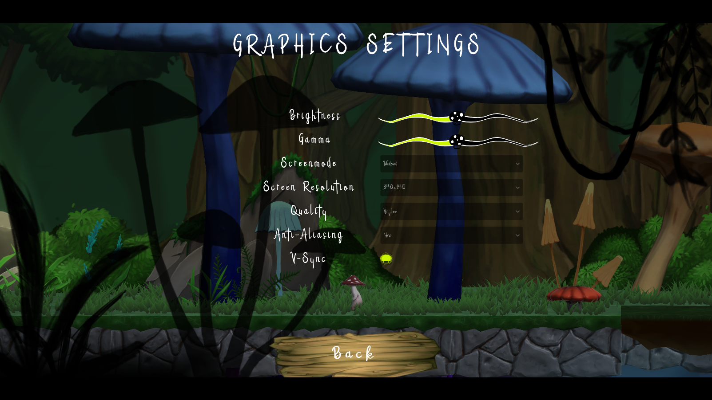
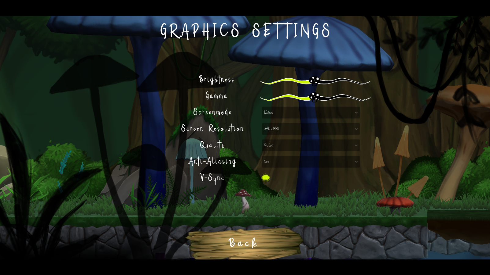

The Heart of the Forest is a 2.5D adventure platformer for PC.
You play as a red-capped mushroom tasked by the Forest God to help save the forest from corruption by
finding and returning the Heart of the Forest before the corruption takes over.
December 09, 2022
The Heart of the Forest is a 2.5D adventure platformer about a little red-capped mushroom, who is
tasked with finding all of the lost heart fragments and returning them to the forest god to prevent
the corruption from taking over.
The player must explore different areas using their various abilities in order to find a singular
heart fragment, and then return it to the village. Once all four fragments have been found, the game
is complete.
PLATFORMING SYSTEMS (OBJECTS)
USER INTERFACES (Design & systems)
The player’s health was quickly set up, but served as the core functionality anyway. The lives were stored as an integer and controlled/clamped in Update() based on the maxLivesvariable - that way designers could easily test and configure what was best. Thefunctions that Add, Remove, and Restore lives were all simply modifying the currentLives variable.
The poison puddle was incredibly simple, when a collision is detected, if it is the Player, then removes X amount of health. This gave the designers the ability to decide whether a poison puddle/pool was instant death, or gradually deducts from the player's health.
private void OnTriggerStay2D(Collider2D contact)
{
if (contact.gameObject.tag != "Player") { return; }
playerHealth = contact.GetComponent<PlayerHealth>(); //Get the player health class
playerHealth.RemoveLives(damageDealt, PlayerDamageType.Poison); //Remove lives from player
if (playerHealth.CurrentLives <= 0 && playerHealth.DropHeartFragOnDeath)
MakePlayerDropHeartFragment(contact.gameObject);
}
The moving platforms were one of the more difficult systems. My idea was to create a transit system that takes in an array of transform.position for the obj_platform to move between. Simple enough. The complicated bits came with all the validation checks, making sure the platforms performed as intended when they were set to move autonomously or with player input, and then whether the player was grounded on them or not, as well as checking which point the platform is currently at and telling it whether to stop or keep going.

Rotating blocks were nothing special, I simply tell the target game object to rotate using a Quaternion, using an integer variable representing the degrees per second. I made sure to have a boolean that allows designers to choose if they want the platform rotate at a steady rate, or incrementally stopping.


I had a lot of fun playing with the bounce pads and got to try a few different methods. I
found I got the best results by using a raycast between the player and the bounce pad
to check for the point of contact, and then applying the actual bounce mechanic in the
direction of the bounce pad.
The player bounces higher with each bounce up to a certain point, and will have the
values resset when in contact with the ground. The calculate force is used with the
boucne direction to apply a velocity to the player.
private void Bounce(Vector2 bounceDirection)
{
tempBounceForce += bounceForceIncrement; //Multiplier that makes bouncing higher incrementally
tempBounceForce = Mathf.Clamp(tempBounceForce, 0, bounceMaxForce); //Clamp the bounce force
pRb.velocity = bounceDirection * (tempBounceForce * 2F); //Add velocity to the player
}
The system was created to be applied to any object and worked well with other systems.
Every Update() there is a check to see if playerOnPlatform == true and if the
down input is triggered. If both conditions have been met, then the target platforms
collider is disabled and coroutine is called to re-enable the collider after 0.5 seconds.
I didn't run into any troubles with this method, the timing was perfect and no issues were
found, however I could seem to find a good way to apply pixel-correction when the player
collided with the corners of the platform.


The light sensitive mushroom platforms consist of two basic functions: grow
and shrink. In the gif, you can see the two variations and how they respond
differently depending on the player's glow ability.
The base of the platforms (mushroom stem) will respond when contact with light is
entered or exited, and begin a coroutine which grows/shrinks them, and disables
the collider when shrunk.
private IEnumerator LerpWithSize(Vector3 startSize, Vector3 endSize, float speed) {
lerpTime = 0F;
while (lerpTime < 1F) {
meshParent.localScale = Vector3.Lerp(startSize, endSize, lerpTime);
lerpTime += Time.deltaTime * speed; //Apply speed
yield return null;
}
meshParent.localScale = endSize;
}
︵ ◇ ︵
 

The UI took up a lot of time to do, updates to parent prefabs would often cause unwanted
issues and bugs that needed to be addressed quickly.
Setting up the functionality for every time a button was pressed was straightforward, only
requiring access to certain canvas elements and scene indexes to switch between them.
The entire options menu was a little bit differemt, in order to not repeat any code, I
had to cache the most recent menu that was opened, and then try to enable it when pressing
the back button within any of the sub-options.
private GameObject latestMenuCache = null; //Caches the last accessed/current menu
public void ReturnToOptions() {
latestMenuCache.gameObject.SetActive(false); //Gets the cached menu
menuManager.optionsMenuUI.SetActive(true);
}
The most challenging aspect of the GUI was handling everything relating to the
Graphics Settings. I found it quite difficult trying to get the dropdowns and other elements
to load and sync up with the realtime changes, as well as trying to make sure that the functionality
was properly working.
Playing with these systems was a first, and I'm glad I took on the challenge because not only am I
proud of my achievements, I also learnt quite a bit about the features Unity allows us to use in
relation to grapphics.
I was allocated the team Project Coordinator. It was an interesting experience and I learnt alot
about how to handle individuals within each discpline, as well as what it means to actually fill
the role.
I made sure to keep on top of documentation, including writing out meeting agendas and
notes for the team to follow.
Keeping up to date with what everyone was doing while also not getting to involved in every
discipline was also a challenge, I did catch myself needing to step back on occaision to give
others the opportunity to work things out independantly. Unfortunely, I did have to take some major
risks during the 7th week of development, the level design simply wasn't past its drawing stages
and the rest of the team being notciably upset with the lack of progress - I managed to step in and
guide the designers down a different path which ultimately worked - the result is the one that has
made it into the final game.
Generally speaking, the role of Project Coordinator was challenging but incredibly rewarding, I would
love to fill those shoes again someday to gain even more experience and help others look at things
from a different perspective.
︵ ◇ ︵

I helped with some of the design for the Itch.io page, using custom CSS to alter some of the pages elements. The background was a difficult task as it consisted of two separate images that had to be set and calculated to dynamically adjust with the pages resolution, and the hover effect when the mouse is over the images, were the major visual tweaks I had done.
I created all the trello boards for the team at the beginning of alpha. I set up tags and
colour coded each discipline to help with organisation, automated certain cards so that tags
are automatically added when a card is created or moved, and also linked important documents
and created a submission checklist that can always be referred back to.
I contributed to a lot of the maintenance within the _Major Production: Main Board and the
Programming Board, but don’t deserve all the credit. The programmers all did their share of
maintaining the programming board.